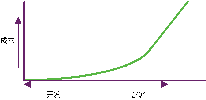

| 质量管理 |
 |
|
| 相关元素 |
|---|
|
 部署之后查找和修复软件问题的代价要大 100 到 1000 倍。在项目的整个生命周期内验证和管理质量，对于适时实现正确目标是必不可少的。 我们说的整个生命周期内质量验证是什么意思？在项目生命周期内，随着工件的完善在几个时间点评估所有工件的质量是很重要的。应在生成工件的活动完成时以及每次迭代结束时评估工件。 尤其是，当生成可执行软件时，应在每次迭代中针对重要场景演示和测试该软件，这样就可以更切实地理解设计权衡和更早地消除体系结构缺陷。这是相对于更传统的方法而言，后者将集成软件的测试工作留到了项目生命周期的晚期。 什么是质量？简介质量是我们在产品、流程和服务方面所共同追求的东西。然而当被问及“什么是质量？”时，每个人都有不同的观点。常见的回答包括下面两种：
提到质量，也许最多见的（尤其涉及到软件）是关于缺乏质量的评论：
这些常见的回答表达出了质量的意思，但是它们在严格检验质量并在其执行时提高质量方面几乎没提供什么空间。这些评论都说明，需要以可度量和可实现的方式来定义质量。 但是，质量不是一种个单纯的特征或属性。它是多方面的，并可能受到某一产品或流程的控制。 产品质量注重于构建正确的产品，而流程质量注重于正确地构建产品。关于其他信息，请参阅概念：产品质量以及概念：流程质量。 质量的定义《新世纪经典美语大辞典（第 3 版）》（Houghton Mifflin Co.,© 1992, 1996）中质量的定义为：
按该定义所示，质量不是单一方面的，而是多方面的。要使用该定义并将其应用于软件开发，必须对该定义进行优化。因此，为了 Rational Unified Process（RUP）之用，质量定义为：
实现质量不是简单的“满足需求”或生产出满足用户需要和期望的产品。 质量还包括确定用于证明达到质量的度量和标准，以及实施一个流程以确保该流程创建的产品已达到所需的质量水平并可重复和管理。 关于 RUP 如何定义质量概念的其他信息，还请参阅以下几页文档： 谁负责质量？一种常见的误解是，质量由一个小组负责，或是一个小组的职责。这种说法通常又通过创建一个小组（有时称为“质量保证”，其他的名称包括“测试”、“质量控制”和“质量工程”）并赋予他们负责质量的特权和职责而得以延续。 质量是，而且应该是每个人的职责。达到质量必须是几乎所有流程活动的不可缺部分，而不是一个独立的规程，因此每个人都对他们生产的产品（或工件）的质量负责，并对他们参与的流程的实施负责。 每个角色都以下列方式参与达到质量的活动：
每个人都分享实现高质量产品的职责和荣誉，或分担低质量产品的耻辱。但只有直接参与特定流程组件的那些人对这些流程组件（工件）质量的荣辱负责。不过，必须有人负责管理质量；即，提供监督以确保质量得到管理、度量和实现。 负责管理质量的角色为项目经理。 关于质量的常见误解关于质量有许多误解，最常见的包括： 质量可以加入产品中或“测试”到产品中对于一个产品，如果不对它是什么、需要做什么、谁来使用以及如何使用等等进行描述，就无法生产该产品；同样，如果不对质量进行描述、度量并且质量不属于创建产品流程，就无法达到质量和实现质量。 请参阅概念：度量质量以及本文档中标题为质量是独立自主的部分。 质量是单一方面的，是一种属性或特征，对每个人的意义都一样质量不是单一方面的，它不是一种属性或特征。质量是以许多方式度量的 － 质量标准和条件是为了满足项目、组织和客户的需要而确立的。 质量可以从多个方面进行度量 － 有些适用于流程质量；有些适用于产品质量；有些两者都适用。 可以在下列方面度量质量：
关于其他信息，请参阅概念：质量方面、概念：产品质量和概念：流程质量。 质量是独立自主的质量不能独立自主。要达到质量，必须实施、服从和度量一个流程。RUP 用于为在开发组织内分派任务和职责提供一种有章可循的方法。我们的目标是在可预测的时间表和预算内确保生产出满足用户需要的高质量软件。RUP 以一种可针对多个项目和组织定制的格式捕获现代软件开发中的许多最佳实践。环境规程为您提供了关于如何最好地按您的需要配置流程的指导信息。 基于几个因素，可以配置流程，并且可以协商质量（验收标准）。最常见的因素为：
流程和验收标准的变更应在项目开始时就确定并达成一致。 RUP 中的质量管理进行管理质量具有以下目的：
管理质量是在 RUP 的所有规程、工作流程、阶段和迭代范围内实施的。一般来说，在整个生命周期内进行质量管理意味着实施、度量并评估流程质量和产品质量。以下列表中突出显示了每个规程中为进行质量管理而开展的一些工作：
|

© Copyright IBM Corp. 1987, 2006. All Rights Reserved. |